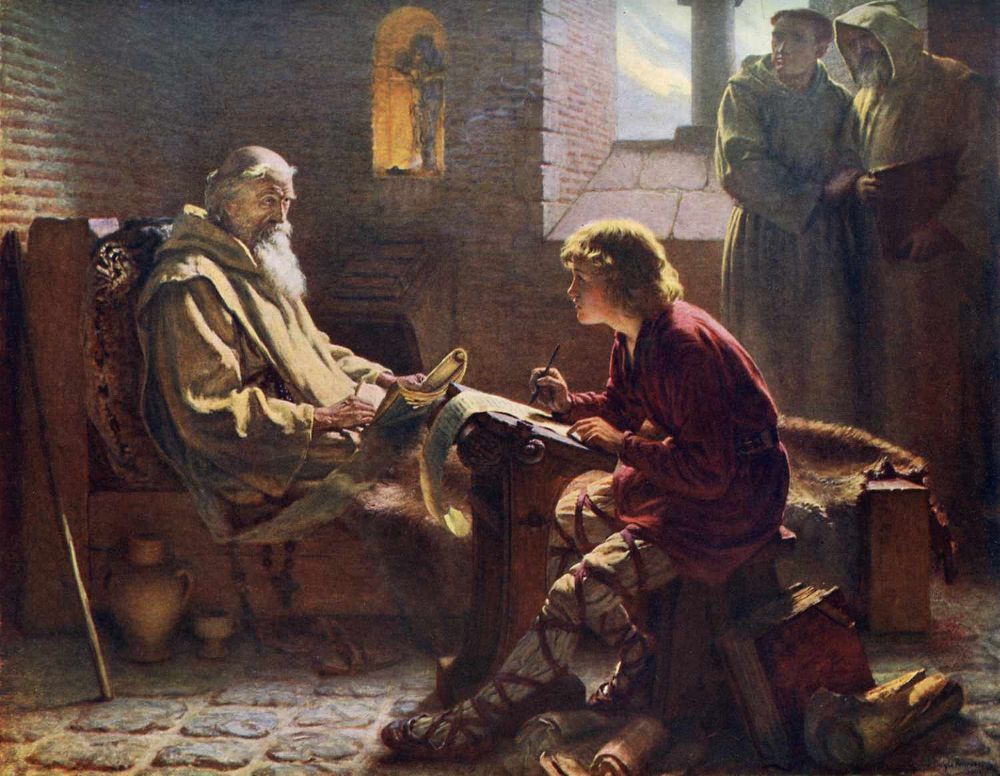

750 CE |
HOME PAGE |
Bede The Venerable, or Saint Bede, was an English monk, author, and scholar who died in 735. He is most famous for his books titled the Ecclesiastical History of the English People, which is so famous that it earned him the name of "The Father of History". His work covered the history of Christian Churches in England and is written over 5 books.
